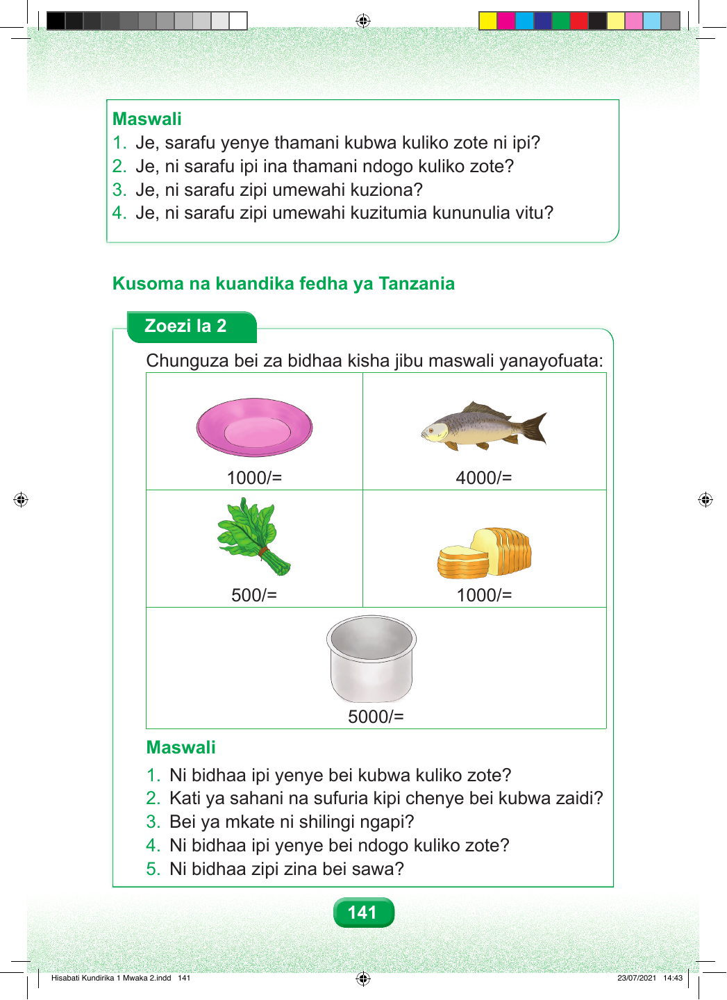

Maswali 1. Je, sarafu yenye thamani kubwa kuliko zote ni ipi? 2. Je, ni sarafu ipi ina thamani ndogo kuliko zote? 3. Je, ni sarafu zipi umewahi kuziona? 4. Je, ni sarafu zipi umewahi kuzitumia kununulia vitu? Kusoma na kuandika fedha ya Tanzania Zoezi la 2 Chunguza bei za bidhaa kisha jibu maswali yanayofuata: 1000/= 4000/= 500/= 1000/= 5000/= Maswali 1. Ni bidhaa ipi yenye bei kubwa kuliko zote? 2. Kati ya sahani na sufuria kipi chenye bei kubwa zaidi? 3. Bei ya mkate ni shilingi ngapi? 4. Ni bidhaa ipi yenye bei ndogo kuliko zote? 5. Ni bidhaa zipi zina bei sawa? 141 Hisabati Kundirika 1 Mwaka 2.indd 141 23/07/2021 14:43